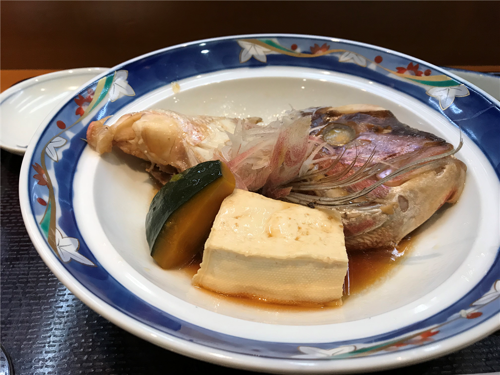
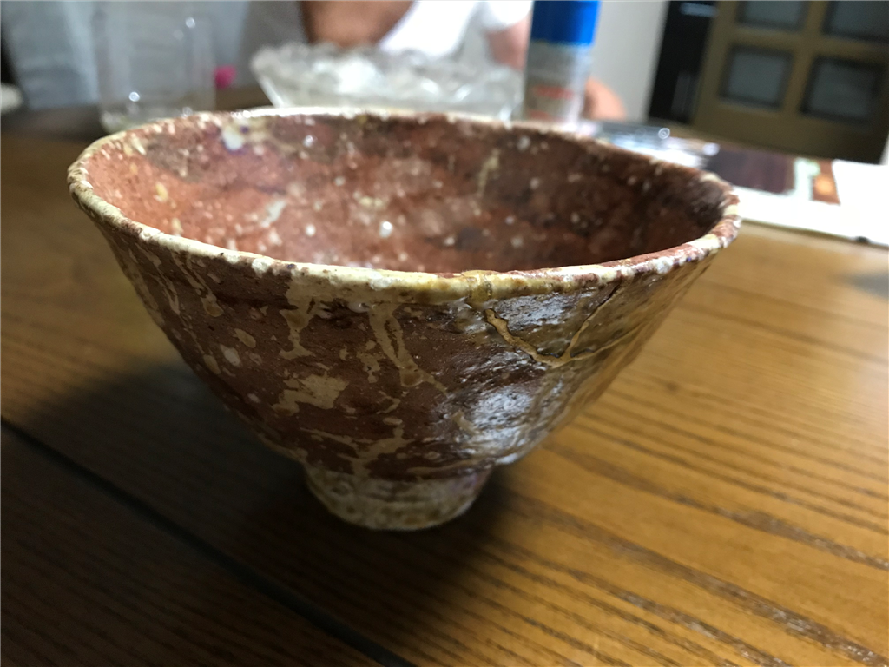
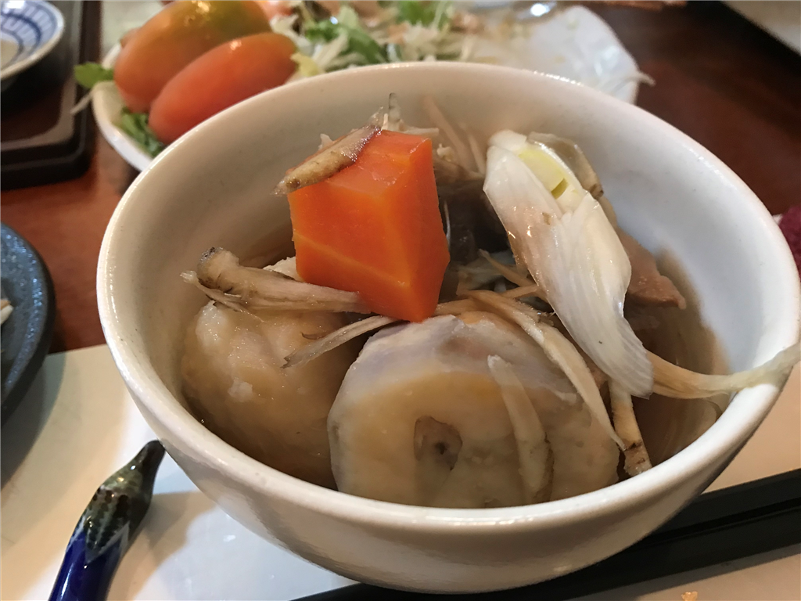

松山：最近食べたもの
執筆日時：
奴寿司（2018/09/17）
父がそろそろまた海外出張に出るというので、送別会も兼ねて道後まで出かけた。初めて入るという「飛鳥の湯」を案内し、その前にある寿司屋「奴寿司」に入る。ここは以前にも友人が遊びに来た時に使ったが、大将の愛想がよいのが印象的だった。うちの父はすぐ料理にケチをつけるのがダメなところだと思うけれど、ここならば楽しく話ができるだろう。
その日は確か月曜日（敬老感謝の日で休み）で、市場から仕入れがなく、お魚の種類はあまりなかったけれど、それでもお刺身をつまみながらお酒を飲んでるうち、次第に場も温まってきた。すると、一人の外人さんが暖簾をくぐって入ってくる。ラテン系の鼻の高いイケメンだ。さすが道後、外人さんのお客さんもくるんだなぁ……っていうか、接客とか大丈夫なのかなぁ、と思ってみていると、流石というべきか、大将は英訳された・写真付きのメニューを片手に、べったべたな英語で案内を始めるではないか。意思疎通もちゃんとできているようで、モノの数秒で何を注文するかが決まったようだ。道後温泉本館の受付のおばちゃんが外人のお客さんを相手するのも見たことがあるが、どうして、みんな堂々としていてすごい。自分にもそういう度胸があればいいのだが。
ちなみに、外人のお兄ちゃんはイタリアから来たのだそう。近所に住んでいるのだという女の子が一人、また店にやってきたので、途中からお相手はそっちの方にお任せしたのだが（おっさんとしゃべるよりかわいい女の子としゃべる方がいい思い出になるやろう！）、PENTAX のよさげなカメラをもった気さくな人で、つたない英語で「なんでイタリア人は女の子を見るとすぐに話しかけるのですか？」と失礼なことを聞いても、爆笑するばかりで、けっして怒ったりはしなかった。あとは「英語で"敬老の日"ってなんていうんだろう？」みたいな話をしてた気がする（自分は適当に a national holiday for old men and women みたいに表現してたが、本当は Respect for the Aged Day and Seniors' Day などというのだそうな）。

そのあと、大将は「作りすぎたから」と煮つけを出してくれた。これがまたおいしい。あまりこういう店で写真を撮らないようにしているのだけど、これだけは記念に撮っておいた。お土産に太巻きもいただいて、楽しく過ごすことができた。
瀬戸寿司（2018/09/28）
瀬戸寿司は三番町八坂通りにあるお寿司屋さん。その日は「笠組」で父と夕食をとったあと、酔っぱらった父をそのままタクシーで家へ送り返し、三津浜から @ramusara さんを召喚して街でのんでいた。最初の店は庶民的な雰囲気に好感が持てるいいお店だったが、それほど美味しくなかったというのもあり、口直しというわけではないが、たまたま見つけたお寿司屋さんの戸を叩いてみることにした。
今思えば、財布の中身も確認せずに豪胆なことをしたもんだと思う。
カウンターで腰を下ろし、正直に「3軒目なんですよー（@ramusara さんは2件目だけどｗｗｗ）」などと白状すると、お通しとお刺身をよしなに整えてくれる。ヘビーなのはもうダメだけど、まだお酒は飲みたい、そのお供になるようなおいしいものを胃袋の隙間に入れたい――というフワッとした要求に応えてくれるちょうどいい献立で、実はここで初めて「あれ、ここ、高くてよいところじゃねーのか？」と気づいた。
使ってる器も面白い。カケたところは、金で継いである。話を聞くに、作陶も大将自らがなされるとの由。そこから話が広がり、書の話や茶道のお話なんかをすることになった気がする。まぁ、自分はお茶なんぞしたことはないのだが、有名な茶器の謂れなどは「へうげもの」（や博物館など）でお勉強していて、ちょっとは知っていたのだ（えっへん！
")
- 作者: 山田芳裕
- 出版社/メーカー: 講談社
- 発売日: 2012/09/28
- メディア: Kindle版
- 購入: 2人 クリック: 2回
- この商品を含むブログ (1件) を見る
そしたら、帰りに金で継いだ器をいただいてしまった。自分は器の良し悪しのわからない男だけど、なかなか味のあるモノだと思う。さっそく父ちゃんがこれで卵かけご飯を食ってたけど、何やら美味しく感じるのだそうな。自分だったらせめてもう少し小さめに盛るけどな……（

ちなみに、お会計は一人8000円位だった。最後、お寿司をちょっとつまんだ程度だったのにで、この程度の致命傷で済んだけど、しょっぱなから行ったら割と取られそうだな。でも、今度はゆっくり・ガッツリ食べに行きたいなーと思った。
炭焼酒房 嬉楽家（2018/10/06）

10月6日は、松山のお祭り。その日は行きつけの居酒屋のいも煮大会に誘っていただいていたので、2人ほど誘ってお邪魔した。通いだして割と長いけど、こういうのに誘ってもらえるのは初めて。去年は初めてミカンもらったし、ようやく松山にもなじめてきたのかなぁ、と感じる。
午後2時から、ほくほくした伊予美人のいも煮をつつきながら、ながながと飲むのは楽しい。途中、お神輿がやってきたのでちょっと乱暴めに激励してあげる。外から来た人間なので、こういう祭りには参加せず、遠巻きに眺めて楽しむだけだったけど、ちょっと身近に感じました。